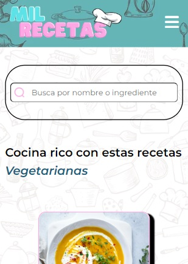
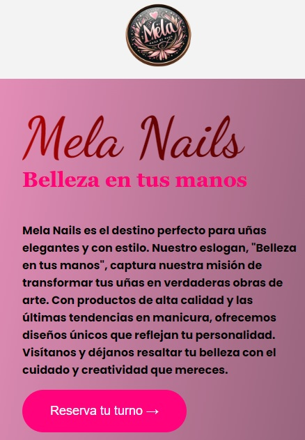

Estudiante de Ingeniería en Informática y desarrollador Full Stack Python con especialización en Front-End. Me dedico a transformar datos complejos en historias visuales claras, creando soluciones intuitivas que apoyen los objetivos estratégicos de las organizaciones.
Descargar CVComo estudiante de Ingeniería en Informática, me destaco por mi proactividad, adaptabilidad y entusiasmo por aprender. Soy desarrollador enfocado en crear páginas web modernas, funcionales y responsivas, siempre buscando mejorar mis habilidades y aportar valor en cada proyecto.

Trabajo grupal del curso Codo a Codo. Página de recetas donde encontrarás miles de opciones, filtradas por categoría o tendencia. 100% responsive.
Ver proyecto
Página dedicada al arte de las uñas, donde encontrarás imágenes y datos de contacto. 100% responsive.
Ver proyecto